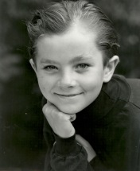
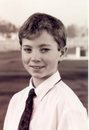

Mother's Memories:
Before Nial was born I prayed and asked for a child. Within a week I was pregnant and Dad immediately knew that he would be a boy. After 24 hours of labor with Nial the doctors decided to do a C-section because his hand, instead of his head, was coming out first. When the cut was made his hand shot out! It ended up being a good thing that he was born by C-section because he was the biggest baby ever born in the Sacramento hospital; 11 lbs 3 oz. We'd moved back to Ashland during my pregnancy with Nial but I had to return to Sacramento for the birth as my doctor was in Sacramento. I traveled to Sacramento a month before Nial's birth as I didn't want to chance a fast delivery when I started labor. The trip was five hours in our camper. Shira was with me because she was only three at the time. When I started labor one evening and I called Dennis to start his car trip to Sacramento to be with me. The girls came also and even beat me to the hospital because I waited to go until I was close to delivery. We were at the hospital all day and into the next night before they did the C section. Dane and Karen were engaged and when they came to see me at the hospital I told the nurses that Karen, who was about to be married, would probably be in the same hospital the next year giving me my first grandchild. It all came true when in March of the following year Karen had Ammon. Grandpa George flew his twin engine airplane to Sacramento to pick up Nial, Shira and Me and fly us home to Ashland. The sisters in the church we attended while in California had a shower for Nial before we left, which was nice.
Nial is the eighth child in the family with two older brothers born over twenty years before him and five older sisters in a row after that. We were all so happy to have another boy in the family and had a lot of fun playing with Nial. At two months Nial had grown to 22 pounds! During Nial's childhood he loved eating and would sit and eat for hours at his little table, but he always stayed slim (except the first year of his life). Melanie and Scott were courting when Nial was a baby and I use to send Nial with them on dates--as a chaperone.
As a child, Nial loved driving his battery-powered jeep all over the driveway for hours. He also loved science and inventing. He loves the outdoors, to explore and is good at arts and crafts. He became a fisherman at a pre school age when his brother in law, Scott, took him fishing and taught him the art. Nial then taught his twin brothers to fish and still spends many summer days fishing the lakes of Southern Oregon (and even the coast too)!
Spring 2003
I'm 15 years old, 5'10" and 130 lbs. My interests are fishing, hiking, camping, biking, climbing, wake-boarding, rafting and most other extreme outdoor sports. I also like to cook. I like U2, Guns 'n' Roses, AC/DC and most 80's music. I love the Lord of the Rings books and films. My favorite colors are red and black. I love fruit, especially nectarines and peaches. I hate sweet potatoes and eggs. I also hate cleaning my room. Next year I'll be a sophomore at A.H.S. (10th grade). I'm thinking of becoming an opthamologist.